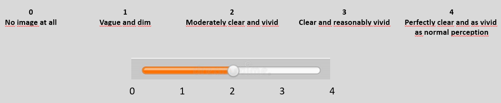

<!DOCTYPE html>
<html>
  <head>
    <script src="./src/jspsych.js"></script>
    <script src="./src/plugin-html-keyboard-response.js"></script>
    <script src="./src/plugin-html-button-response.js"></script>
    <script src="./src/plugin-html-slider-response.js"></script>
    <script src="./src/plugin-instructions.js"></script>
    <script src="./src/stimuli.js"></script>
    <link rel="stylesheet" href="./src/jspsych.css">
    <style>
      img {
        width: 600px;
      }
      #jspsych-html-slider-response-next {
        float: left;
      }
      #button-idk {
        float: right;
      }
    </style>
  </head>
  <body></body>
  <script>

    const jsPsych = initJsPsych({
      default_iti: 250, 
      on_finish: function() {
        jsPsych.data.displayData();
      }
    });

    // initialize trial counter
    let trialCount = 0;

    // instruction pages
    const instruction = {
      type: jsPsychInstructions,
      pages: [
        // pages 1-3 - instructions
        `In the following experiment you will see one word at a time and be asked to
          imagine the corresponding thing or concept.`, 
          `Once the word disappears, please start imagining the corresponding thing.
          Please try to imagine each thing as vividly as possible.`,
          `After a few seconds, you will be asked to rate how vivid your mental image
          was.
          If you don't know a word well enough to form a mental image, you can
          indicate so on the ratings page.`,
        // page 2 - example
        `<div>Example:
          If you are given the word "key", please imagine a key and then rate how vivid your
          mental image of the key is.
          The rating scale has a anchor points marked with numbers 0-4, with the following
          meanings:</div>` + ``
      ],
      show_clickable_nav: true,
      allow_keys: false,
      button_label_previous: 'Previous',
      button_label_next: 'Next',
      button_label_finish: 'Begin practice',
    };
    

    /*
    TRIALS
    */

    const fixation = {
      type: jsPsychHtmlKeyboardResponse,
      stimulus: '<div style="font-size:60px;">+</div>',
      choices: "NO_KEYS",
      trial_duration: 500,
      data: { screen: "fixation" }
    };

    const stimulusWord = {
      type: jsPsychHtmlKeyboardResponse,
      stimulus: () => 
        `<div style="font-size:40px;">${jsPsych.timelineVariable('word')}</div>`,
      choices: "NO_KEYS",
      stimulus_duration: 600,
      trial_duration: 3600,
      data: { screen: "stimulus word" }
    };

    const rating = {
      type: jsPsychHtmlSliderResponse,
      stimulus: "",
      labels: ['0', '1', '2', '3', '4'],
      slider_width: 500,
      require_movement: false,
      prompt: '<p>Please rate how vivid your mental image was.</p>',
      on_finish: () => ++trialCount,
      
      // save all relevant trial data
      data: { screen: "trial", 
        word: jsPsych.timelineVariable('word'), 
        category: jsPsych.timelineVariable('category')
      }
    };

    const breakTrial = {
      type: jsPsychHtmlButtonResponse,
      stimulus:  "<p style='font-size: 25px'>Time to take a break!</p>" + 
              "<p style='font-size: 25px'>Take a rest for about a minute. Then, Continue by pressing the button</p>",
      choices: ["Continue"],
      data: { screen: "break" }
    };


    /*
    TIMELINES
    */

    // continue to break trial if trialCount is an even nr, else skip to next trial
    const breakConditional = {
      timeline: [breakTrial],
      conditional_function: () => ((trialCount % 2 == 0) && (trialCount > 1)) ? true : false
    };

    // main procedure, stimuli defined in stimuli.js
    const procedure = {
      timeline: [breakConditional, fixation, stimulusWord, rating],
      timeline_variables: wordList, 
      randomize_order: true
    };


    jsPsych.run([instruction, procedure]);

  </script>
</html>